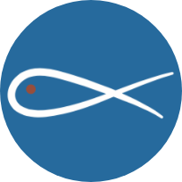

<router-outlet class="main-router-outlet">
  <div class="navbar-item">
    <!-- Menu principal -->
    <div class="dropdown dropdown-name">
      <button class="dropbtn"><strong>Menu</strong></button>
      <div class="dropdown-content">
        <nav class="navigate">
          <div *ngIf="!isLoggedIn()">
            <!-- Lien de connexion visible uniquement lorsque l'utilisateur n'est pas connecté -->
            <a routerLink="app-index"><strong>Accueil</strong></a>
            <a routerLink="info"><strong>Informations</strong></a>
            <a routerLink="app-add-commentaire"><strong>Contact</strong></a>
          </div>
          <div *ngIf="isLoggedIn()">
            <!-- Liens accessibles uniquement lorsque l'utilisateur est connecté -->
            <a routerLink="app-index"><strong>Accueil</strong></a>
            <a routerLink="info"><strong>Informations</strong></a>
          </div>
        </nav>
      </div>
    </div>

    <!-- Menu déroulant Ajouter -->
    <div *ngIf="isLoggedIn()" class="dropdown dropdown-name">
      <button class="dropbtn"><strong>Ajouter</strong></button>
      <div class="dropdown-content">
        <a routerLink="/add-task">Ajouter une tâche</a>
        <a routerLink="/add-personnes">Ajouter des personnes</a>
        <a routerLink="add-benevole"><strong>Ajouter un bénévole</strong></a>
        <a routerLink="app-add-login"><strong>Ajouter un utilisateur</strong></a>
      </div>
    </div>
    <!-- Fin du menu déroulant Ajouter -->

    <!-- Logo et titre -->
    <div class="Accueil">
      <div class="img-bg">
        
      </div>
      <a routerLink="app-index"><strong>ASBL Saint Vincent de Paul la Docherie</strong></a>
    </div>

    <!-- Menu déroulant Consulter -->
    <div *ngIf="isLoggedIn()" class="dropdown dropdown-name">
      <button class="dropbtn"><strong>Consulter</strong></button>
      <div class="dropdown-content">
        <a routerLink="task-list"><strong>Liste de tâches</strong></a>
        <a routerLink="liste-personnes"><strong>Liste des bénéficiaires</strong></a>
        <a routerLink="app-liste-commentaire"><strong>Liste des messages</strong></a>
        <a routerLink="app-liste-benevole"><strong>Liste des bénévoles</strong></a>
      </div>
    </div>
    <!-- Fin du menu déroulant Consulter -->

    <!-- Lien de connexion à droite de la page -->
    <div class="Logins">
      <a routerLink="login"><strong>Connexion</strong></a>
    </div>
  </div>
</router-outlet>
